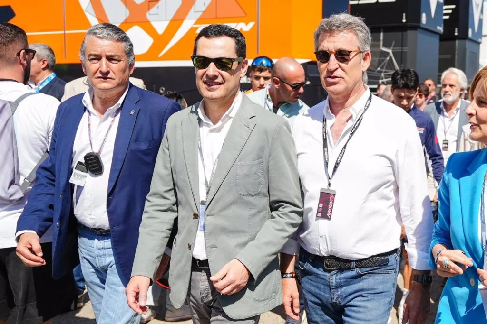

Márquez controla los tiempos

Diggia: “He pedido perdón a Martín aún sin ser mi culpa”
¿Quién ha ganado más veces en el circuito de Jerez?
Bagnaia: "Es genial conocer pilotos como Márquez y
entender que puede haber una buena relación"
Álex Márquez vive su gran día, Marc cae

Última hora del GP de España MotoGP

Jerez acogerá MotoGP hasta 2031